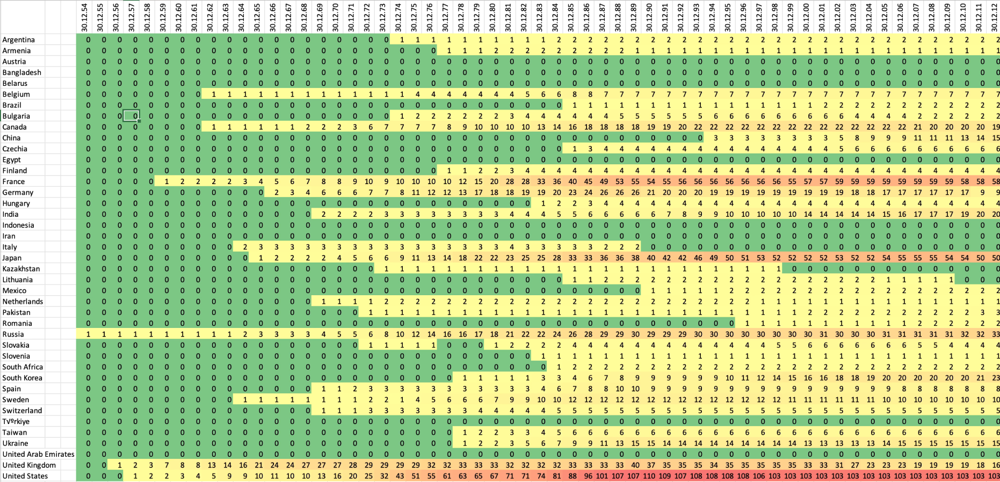

Prozess
Bei der Umsetzung konnte ich viele Tools kombiniert anwenden. So konnte ich die Animation über die Jahre im Code umsetzen und Teile davon in Cinema 4D importieren. Das Design habe ich in Figma gestaltet und alles wurde in ProtoPie zusammengesetzt.
